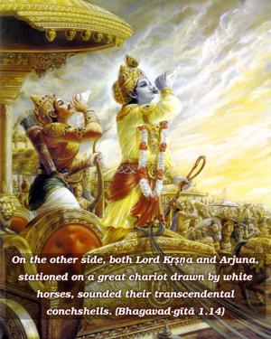
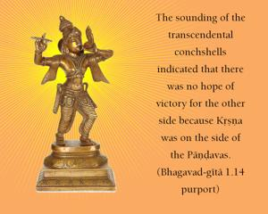
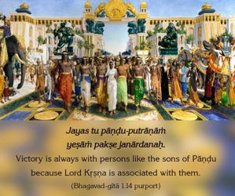
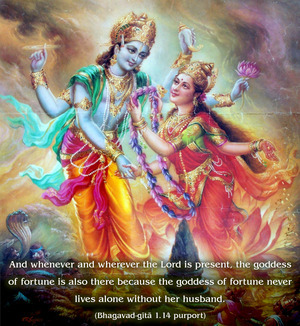
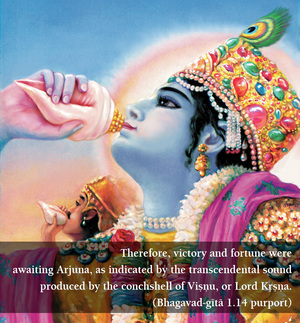

On the other side, both Lord Kṛṣṇa and Arjuna, stationed on a great chariot drawn by white horses, sounded their transcendental conchshells.





In contrast with the conchshell blown by Bhīṣmadeva, the conchshells in the hands of Kṛṣṇa and Arjuna are described as transcendental. The sounding of the transcendental conchshells indicated that there was no hope of victory for the other side because Kṛṣṇa was on the side of the Pāṇḍavas. Jayas tu pāṇḍu-putrāṇāṁ yeṣāṁ pakṣe janārdanaḥ. Victory is always with persons like the sons of Pāṇḍu because Lord Kṛṣṇa is associated with them. And whenever and wherever the Lord is present, the goddess of fortune is also there because the goddess of fortune never lives alone without her husband. Therefore, victory and fortune were awaiting Arjuna, as indicated by the transcendental sound produced by the conchshell of Viṣṇu, or Lord Kṛṣṇa. Besides that, the chariot on which both the friends were seated had been donated by Agni (the fire-god) to Arjuna, and this indicated that this chariot was capable of conquering all sides, wherever it was drawn over the three worlds.